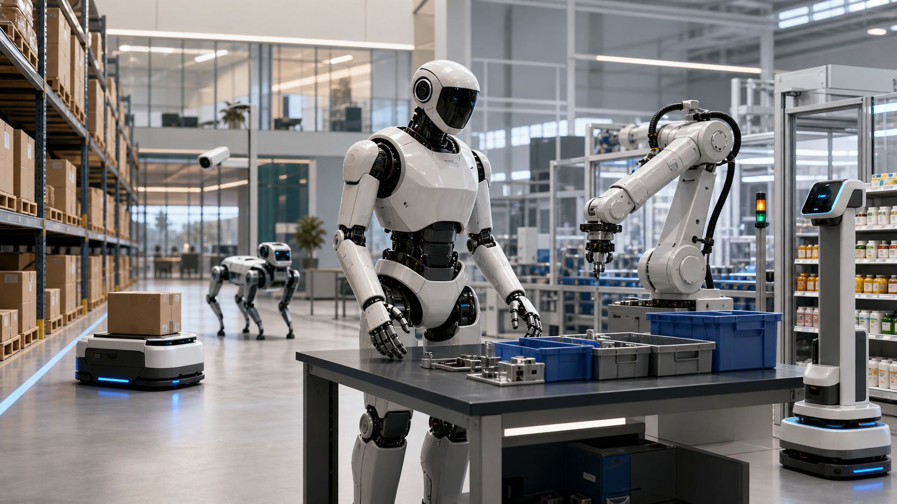

面向董事会、总经理、业务负责人
先选任务，
再选机器人形态
具身智能机器人不是单纯语言交互设备，而是 AI 进入物理世界后，通过感知、决策、行动和反馈学习完成真实任务。管理层判断价值时，应重点关注任务频次、场景边界、客户证据、ROI 和运维能力。

具身智能的核心闭环
机器人能否创造价值，取决于四个环节是否能在真实现场连续运转，而不是某一次演示能否成功。
产业竞争正在变成系统竞争
单个本体只是入口，真正的壁垒来自本体、零部件、模型、数据和应用交付的组合能力。
六条技术路线要分开看
大模型能提升理解和规划能力，项目落地仍依赖运动控制、安全认证、末端执行器、现场运维和商业闭环。
把自然语言和视觉输入转成动作方向，是长期关键路线，但真实成功率仍需场景验证。
用人类示范快速训练技能，是数据积累起点，也要求披露人工介入比例。
让双足、四足和全身协同更稳定，但会运动不等于能完成客户任务。
降低真实采集成本，核心挑战是仿真到现实的差距和评估标准。
降低应用开发和部署复杂度，但标准、生态和跨本体适配仍在形成。
抓取、插拔、补货、装配是难点，需要感知、力控、末端执行器协同。
场景优先级：先做可控高频任务
成熟度不是热度排名。管理层应优先选择客户痛点强、流程可控、风险可隔离、指标可量化的场景。
仓储物流L3P0
能源电力化工巡检L2-L3P0
酒店餐饮商用服务L2-L3P1
制造业汽车产线L1-L2P1
零售门店L1-L3P1
医疗康养L1-L2P2
园区安防公共空间L2P2
家庭服务L0-L1P3
商业化只看五个条件
判断一个机器人项目是否具备落地条件，建议回到以下五项核心指标，而不是只看外形、视频和发布会热度。
90 天试点：将风险控制在可管理范围内
试点价值不是证明机器人可以覆盖全部任务，而是在可承受成本内验证技术、流程、组织和商业可行性。
统一认知明确机器人不是采购玩具，而是流程自动化和数据闭环项目。
列任务池筛出高频、可控、可量化、异常风险低的 5 到 10 个任务。
访谈供应商重点问客户证据、同类部署、遥操作比例、故障率和运维责任。
做低风险试点先选可隔离场景，定义成功率、人工接管、成本和体验指标。
季度复盘判断是否扩大部署、换供应商、暂停投入或转向其他场景。